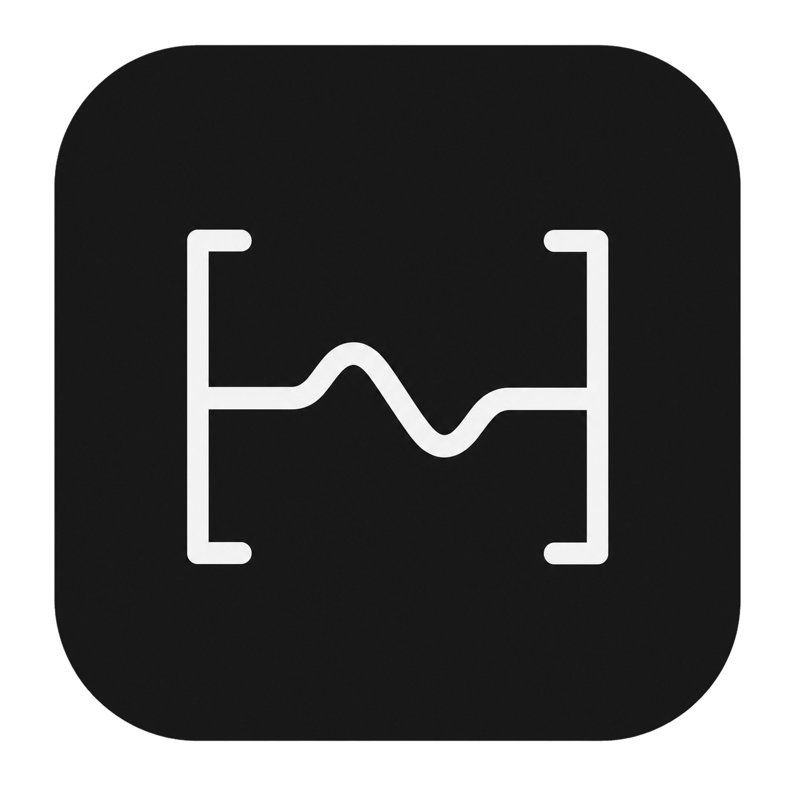

Read
Open a .logicx project and extract the active Project Notes, BPM and key.

Logic LyricsLogic Project Reader DownloadNative macOS app · local-first
Read lyrics, tempo, key and song sections directly from Logic Pro Project Notes, then copy exactly what you need.
Version 2.5.1 · macOS 14+ · Apple Command Line Tools supported
One focused workflow
Open a .logicx project and extract the active Project Notes, BPM and key.
Detect markers such as Verse, Chorus and Outro without rewriting your text.
Copy the complete lyrics or an individual section to the macOS clipboard.
Find recent projects locally, even after a project is moved or renamed.
Read-only by design
The parser reads only the active project alternative. There is no project writer, audio processor, cloud upload or background telemetry.
Private by construction
No app telemetry. Logic Lyrics never sends lyrics, project names or paths.
No cloud dependency. Project reading and section detection happen entirely on this Mac.
Original preserved. Logic Lyrics contains no code path that writes into a Logic project.
Ready when you are